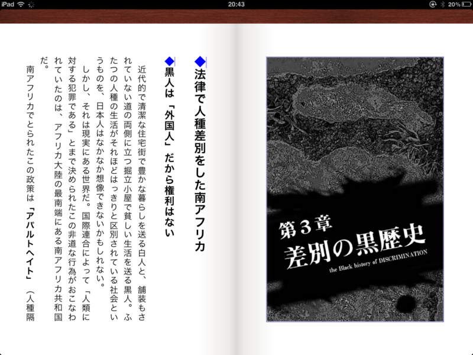

iPad 版の Kinoppy に「秀英明朝」フォントが追加
公開日：
iPad 版の Kinoppy にアップデートがきていたので、適用して広げると、なにやらダイアログボックスが現れた。なんか知らんけど、追加の明朝体フォントを入れませんかというお誘い。もちろん OK！

適用前。本文はゴシック体。

適用後。本文は明朝体。
明朝体のほうが、“本らしく”ってちょっと読みやすい気がする。ただ、僕個人としては、iPad でテキストの電子書籍を読む気にはあまりなれないので......いや、素晴らしいアップデートだと思いますよ？
あと、ちょっとだけ感心したのは、フォントのダウンロードを故意に中断しても、レジュームできること。細かいところだけど、エラいなって思った。もっとも、iOS がそういう仕組みなのかもしれないけど。